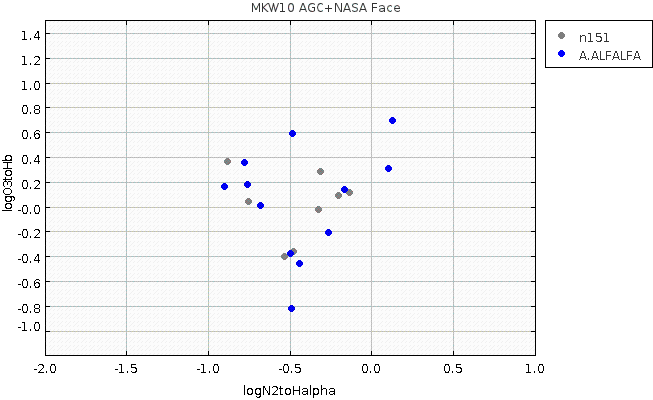

RA,Dec RA,Dec(deg) R(2Mpc) nz nopt cz sig logsig sig logLx dist*
MKW10 NRGb151 1142094+101630 175.5392 10.27500 1.2 12 34 6265 74 2.41 0.13 42.04 0.19 94 HCG058
At this distance, 2 Mpc = 1.2 degrees
So box should be RA > 174.34 & RA < 176.74
Dec > 9.07 & Dec < 11.27
Examine the broader velocity region in AGC in box of 2.4 x 2.4
Make subset from agcnorthminus1.csv:
radeg > 174.34 & radeg < 176.74 & decdeg > 9.07 & decdeg < 11.27

There is a peak between 5800 and 6600. Literature velocity and velocity dispersion 6265 +/-74 (257). 3sigma=222(771), 5sigma=370(1285) Not simple structure. Extension of box to south: more galaxies with similar velocities. For now, use 4 Mpc box and set velocity limits to be 5800 < vhelio < 6600. Find 38 AGC objects. Use agc+nsa.v012.mags+lines.appmags+faceHalpha.csv with subset: vhelio > 5800 & vhelio < 6600 & RA > 174.34 & RA < 176.74 & DEC > 9.07 & Dec < 11.27 & ba90>0.4 Find: n151.agc.nsa.faceHa N = 23 all have ba90>0.4 Use a57+agc+nsa.v012.mags+lines.appmags+faceHalpha.csv n151.a57.nsa.faceHa N = 13 (all code 1,2) # AGCnr radeg_1 decdeg_1 vopt ABSMAG_i BA90 g-i vhelio logN2/Ha logO3/Hb v21 W50 sintp sn icode 213099 174.36833 9.25028 6136 -16.65 0.737 0.593 6134 -0.90 0.15 6151 137 0.58 4.5 2 213102 174.79832 9.63556 5998 -17.88 0.712 0.467 5989 -0.77 0.34 5963 137 0.99 9.0 1 6647 175.26543 10.22444 6369 -19.53 0.774 0.761 6254 -0.15 "" 6278 207 2.89 17.9 1 6657 175.47083 10.30417 6103 -21.77 0.735 1.132 6074 0.10 0.30 6090 141 1.04 8.7 1 210616 175.52042 10.38417 6052 -20.14 0.782 0.821 6093 -0.49 -0.82 6160 79 0.76 8.2 1 6668 175.59917 10.26389 6503 -22.26 0.897 1.118 6476 0.12 0.68 6415 65 0.58 6.8 1 6692 175.87041 10.16111 6055 -21.08 0.584 0.975 6060 -0.49 -0.38 6060 390 11.76 57.4 1 210655 175.87248 10.34528 5995 -19.63 0.723 0.579 6017 -0.68 0.00 6011 182 2.3 17.2 1 213114 175.91374 9.83833 6060 -16.92 0.906 0.607 6067 -0.48 0.58 6050 107 0.61 6.1 2 210665 175.92374 10.24556 6055 -20.16 0.701 0.933 5999 -0.26 -0.21 6003 287 3.78 21.1 1 6700 175.97624 10.78444 5939 -20.88 0.649 0.752 5914 -0.44 -0.46 5916 322 9.4 45.4 1 210751 176.37625 9.72917 6404 -20.20 0.658 1.162 6409 -0.16 0.13 6400 387 4.76 24.5 1 213122 176.44417 9.77611 6060 -16.64 0.694 0.366 6062 -0.76 0.17 6069 81 1.05 11.9 1Now construct the BPT diagram of the two subsets:

Choose the subset which has logN2toHalpha < -0.5 : n151.agc.nsa.faceHa.SF.csv N = 8, of which 4 are NOT in ALFALFA: n151.agc.nsa.faceHa.SF.notalfalfa.txt # AGCnr radeg decdeg NSAID ABSMAG_i g-i vhelio logN2toHalpha logO3toHb 213101 174.77292 9.61861 48604 -17.666145 0.459263 6035.202989392 -0.8830605136645986 0.36287477018165204 213029 175.58708 10.08611 48619 -17.205324 1.2301000000000002 6176.091738751999 -0.5362011318931763 -0.40421175669612863 213118 176.33833 9.80222 48594 -16.968073 0.5867730000000009 6318.361929648 -0.7560341234465306 0.03861574197184876 213120 176.40959 9.62083 48592 -18.340017 0.8645490000000002 6314.928112080001 -0.5345709165404643 "" Becky's finds one object with Ha (faint) and no HI; not in NSA: # AGCnr radeg decdeg vopt 213027 175.42084 10.4989 6163
| Cluster/group | References |
|---|---|
| MKW10 = NRGb 151 = HCG058 |